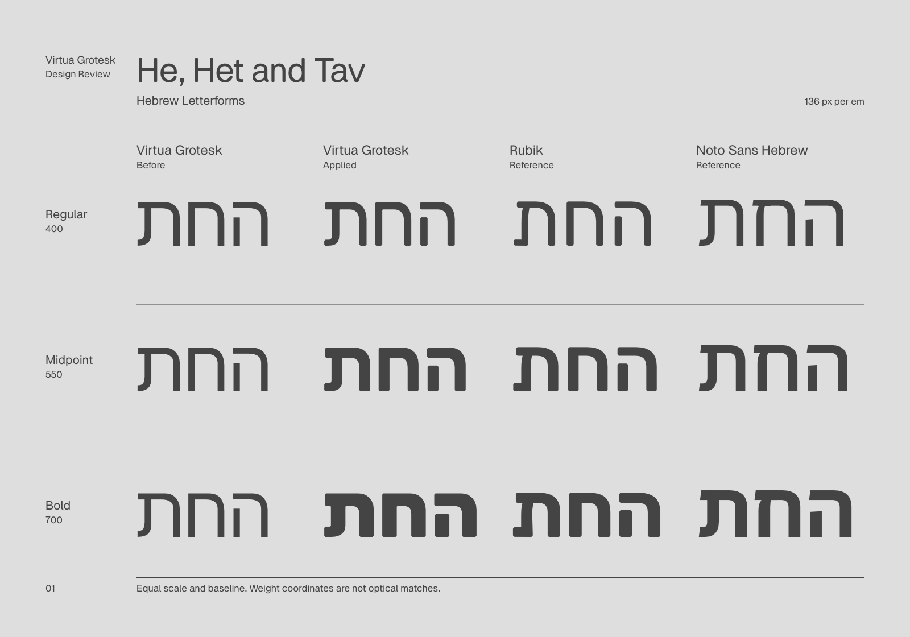

<!doctype html>
<html lang="en">
<meta charset="utf-8">
<meta name="viewport" content="width=device-width,initial-scale=1">
<title>Virtua Grotesk — Design Review</title>
<style>
@font-face{font-family:Virtua;src:url('fonts/labels.ttf') format('truetype');font-weight:400}
:root{color-scheme:light;--paper:#dedede;--ink:#444444}
*{box-sizing:border-box}body{margin:0;background:var(--paper);color:var(--ink);font:16px/1.4 Virtua,Arial,sans-serif}
body.dark{color-scheme:dark;--paper:#444444;--ink:#dedede}
header{padding:24px 5%;display:flex;align-items:center;gap:16px 32px;flex-wrap:wrap;border-bottom:1px solid var(--ink)}
header .brand{color:inherit;text-decoration:none;margin-right:auto}label{display:flex;align-items:center;gap:8px;cursor:pointer}
select,button{font:inherit;background:var(--paper);color:var(--ink);border:1px solid var(--ink);padding:6px 8px}
input{accent-color:var(--ink)}:focus-visible{outline:2px solid var(--ink);outline-offset:4px}
main{max-width:1760px;margin:auto}img{display:block;width:100%;height:auto;aspect-ratio:10/7}
footer{padding:16px 5% 24px;display:flex;justify-content:space-between;gap:24px;font-size:14px}footer a{color:inherit}
</style>
<header>
 <span class="brand">Virtua Grotesk · Design Review</span>
 <label>Sheet <select id="sheet"><option value="01-form">Letterforms</option><option value="02-text">Reading Texture</option><option value="03-weight">Latin and Hebrew</option></select></label>
 <label><input type="checkbox" id="dark">Dark</label>
 <label><input type="checkbox" id="grid">Show Grid</label>
 <label><input type="checkbox" id="baseline" disabled>Baselines</label>
</header>
<main></main>
<footer><span id="status" aria-live="polite">Letterforms · Light · Guides Off</span><span>DesignBot Render · Layout Proposal 3</span></footer>
<script>
const sheet=document.querySelector('#sheet'),dark=document.querySelector('#dark'),grid=document.querySelector('#grid'),baseline=document.querySelector('#baseline'),proof=document.querySelector('#proof'),status=document.querySelector('#status');
function update(){
 baseline.disabled=!grid.checked;
 const theme=dark.checked?'dark':'light',mode=grid.checked?(baseline.checked?'baseline':'structure'):'clean';
 document.body.classList.toggle('dark',dark.checked);
 proof.src=`${mode}/${sheet.value}-${theme}.png`;
 proof.alt=`${sheet.selectedOptions[0].text}, ${theme} version, ${mode==='clean'?'without guides':mode+' grid'}. ${sheet.value==='03-weight'?'Virtua Grotesk Latin and Hebrew.':'Virtua Grotesk compared with Rubik and Noto Sans Hebrew.'}`;
 status.textContent='Loading…';
}
proof.onload=()=>{status.textContent=`${sheet.selectedOptions[0].text} · ${dark.checked?'Dark':'Light'} · ${grid.checked?(baseline.checked?'Structure and Baselines':'Structure'):'Guides Off'}`};
proof.onerror=()=>{status.textContent='This render is missing. Regenerate the review set.'};
for(const control of [sheet,dark,grid,baseline])control.addEventListener('change',update);
update();
</script>
</html>
